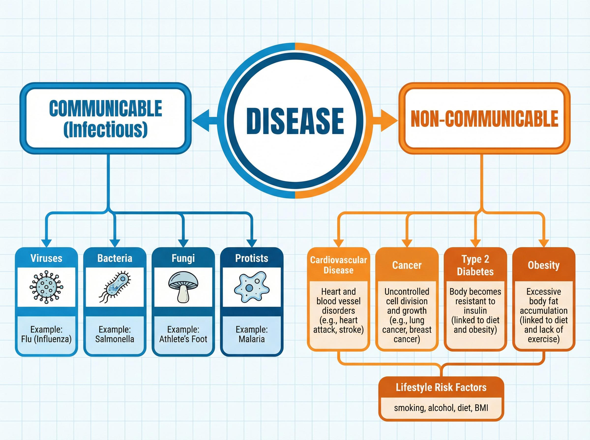
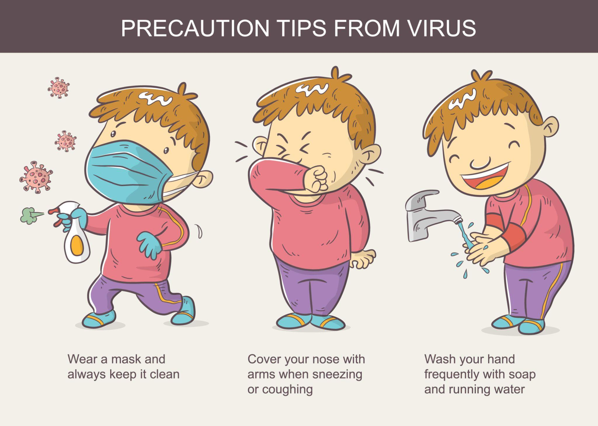
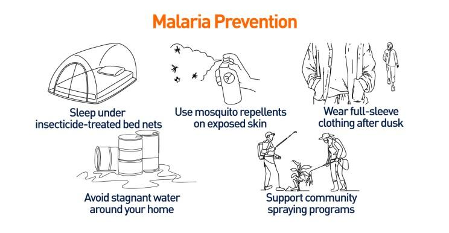
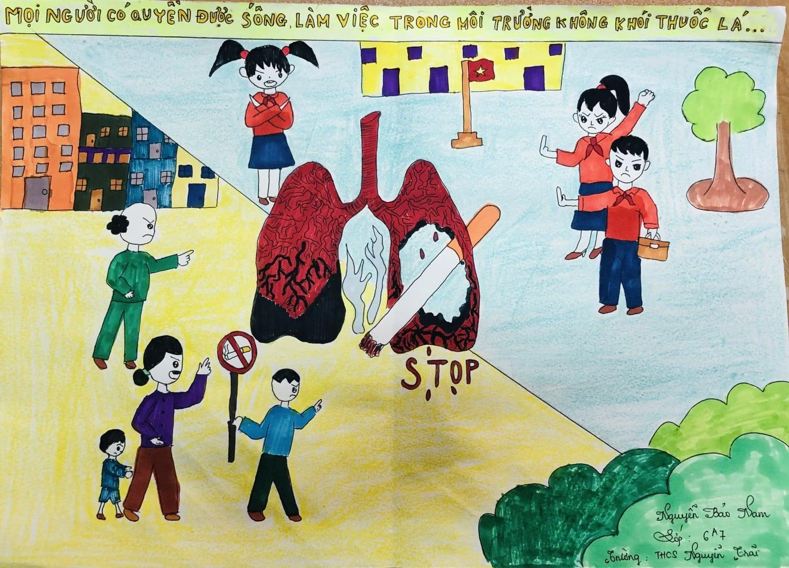
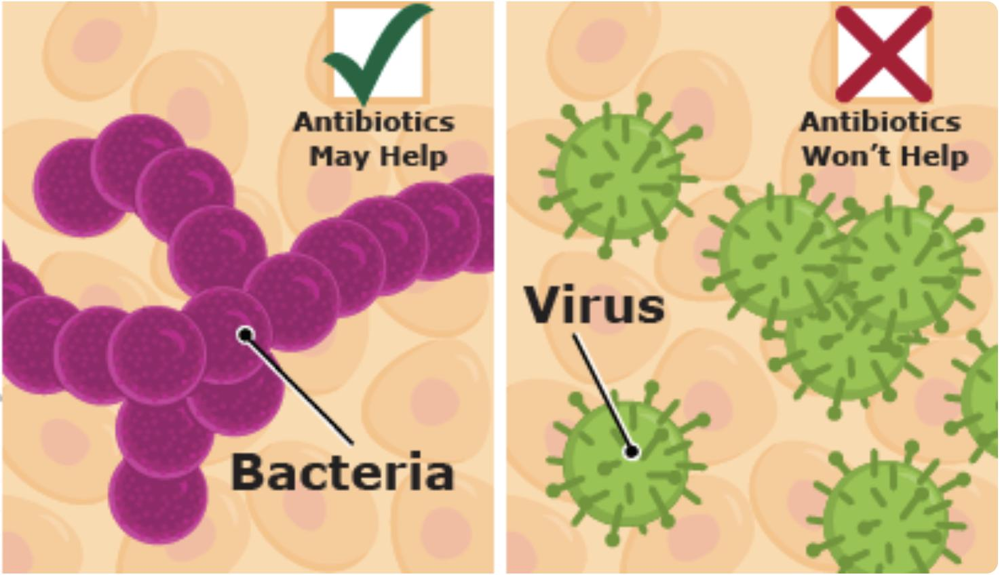
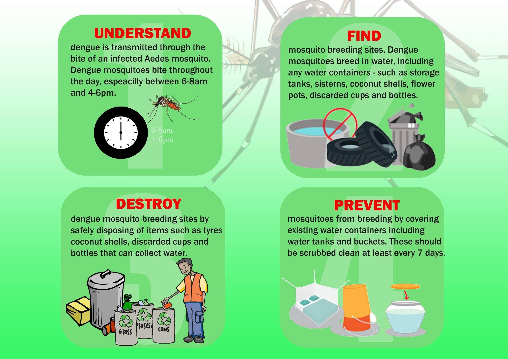
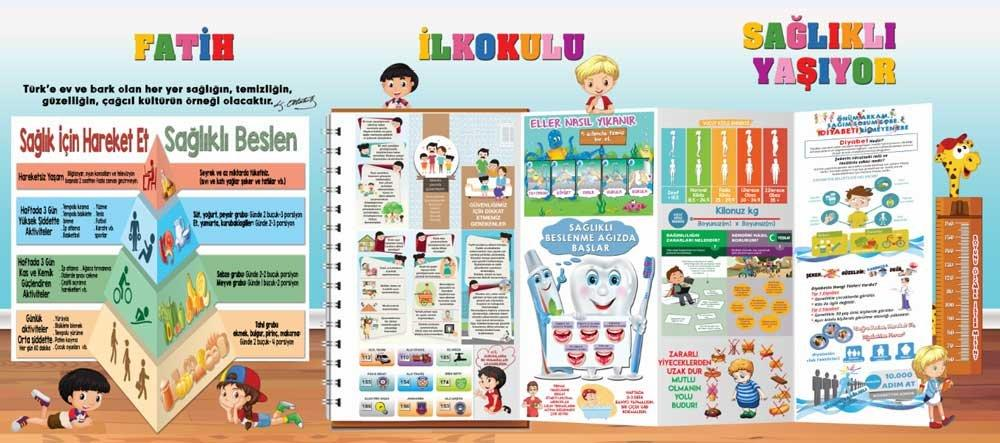
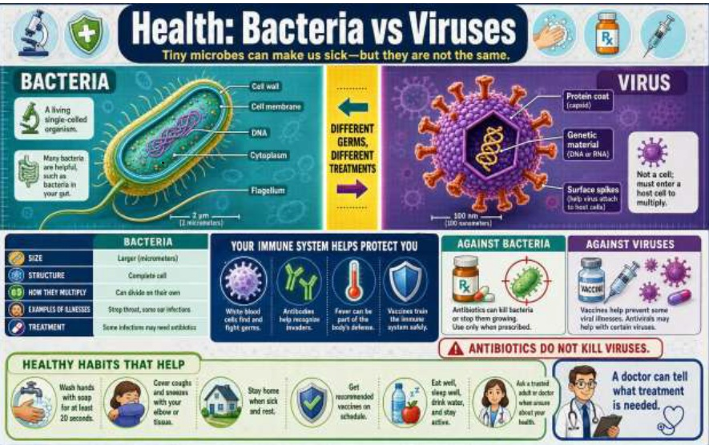
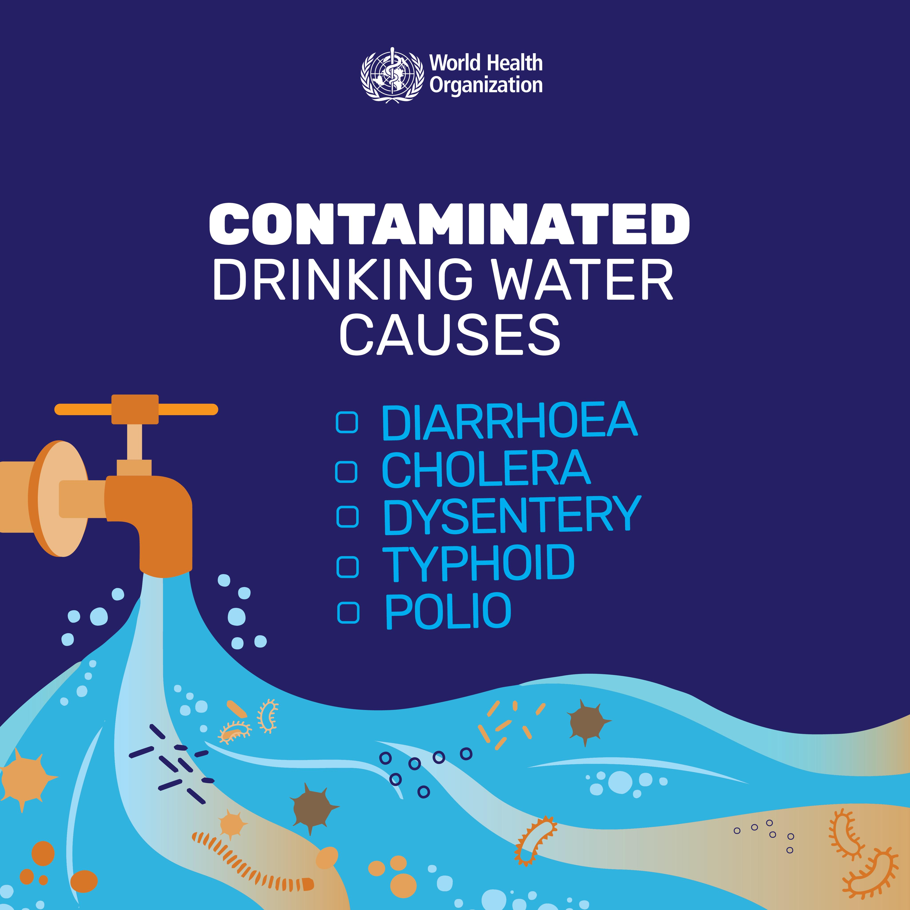
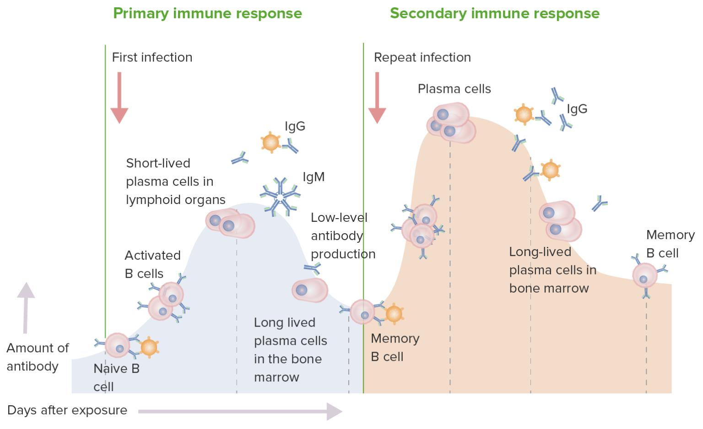

📘Class 8 Chapter:3 Health the ultimate Treasure – Questions and Answers
1. Group the Diseases as Communicable or Non-Communicable
Question 1. Group the diseases shown in the images as communicable or non-communicable.
Answer: Diseases can be divided into two groups:
1. Communicable Diseases
These diseases can spread from one person to another.
- Cold and flu.
- Typhoid.
- Chickenpox.
2. Non-Communicable Diseases
These diseases do not spread from one person to another.
- Diabetes.
- Asthma.
| Communicable Diseases | Non-Communicable Diseases |
|---|---|
| Cold and flu | Diabetes |
| Typhoid | Asthma |
| Chickenpox | --- |

2. Identify the Non-Communicable Diseases
Question 2. Diseases can be broadly grouped into communicable and non-communicable diseases. From the options given below, identify the non-communicable diseases.
(i) Typhoid (ii) Asthma (iii) Diabetes (iv) Measles
- (i) and (ii)
- (ii) and (iii)
- (i) and (iv)
- (ii) and (iv)
Answer: Correct option (b) – (ii) and (iii).
Asthma and diabetes are non-communicable diseases. They do not spread from one person to another.
3. Prevention of Flu in School
Question 3. There is a flu outbreak in your school. Several classmates are absent, while some are still coming to school coughing and sneezing.
(i) What immediate actions should the school take to prevent further spread?
Answer:
- Students with flu symptoms should stay at home and take rest.
- Sick students should be encouraged to consult a doctor.
- Everyone should cover their mouth and nose while coughing or sneezing.
- Students should wash their hands regularly with soap.
- Classrooms should be kept clean and well-ventilated.
(ii) If your classmate, who shares the bench with you, starts showing symptoms of the flu, how can you respond in a considerate way without being rude or hurtful?
Answer: I will speak politely to my classmate and suggest that they visit a doctor and take rest at home. I will not make fun of them or avoid them rudely. I will maintain a safe distance to protect myself and others.
(iii) How can you protect yourself and others from getting infected in this situation?
Answer:
- Wash hands regularly with soap.
- Cover the mouth and nose while coughing or sneezing.
- Avoid sharing personal items.
- Maintain a safe distance from sick people.
- Wear a mask when necessary.
- Maintain cleanliness and eat healthy food.

4. Prevention of Malaria During Travel
Question 4. Your family is planning to travel to another city where malaria is prevalent.
(i) What precautions should you take before, during, and after the trip?
Answer:
Before the Trip:
- Take advice from a doctor.
- Carry mosquito repellent.
- Pack mosquito nets and suitable clothing.
During the Trip:
- Use mosquito repellent.
- Wear full-sleeved clothes.
- Sleep under mosquito nets.
- Avoid places with stagnant water.
After the Trip:
- Watch for fever, chills or headache.
- Consult a doctor if symptoms appear.
- Inform the doctor about your travel history.
(ii) How can you explain the importance of mosquito nets or repellents to your sibling?
Answer: I will explain that mosquitoes can spread malaria by biting infected people and then biting others. Mosquito nets and repellents protect us from mosquito bites and reduce the risk of malaria.
(iii) What could happen if travellers ignore health advisories in such areas?
Answer: They may get infected with malaria or other mosquito-borne diseases. The disease may also spread to other people if proper precautions are not taken.

5. Harmful Effects of Smoking
Question 5. Your uncle has started smoking just to fit in with his friends, even though it is well known that smoking can seriously harm health and even cause death.
(i) What would you say to him to make him stop, without being rude?
Answer: I will politely explain that smoking is harmful to health. It can cause lung cancer, heart disease and breathing problems. I will encourage him to stop smoking and live a healthy life.
(ii) What would you do if your friend offers you a cigarette at a party?
Answer: I will firmly but politely refuse the cigarette. I will explain that smoking is harmful to health and choose healthy activities instead.
(iii) How can schools help prevent students from indulging in such harmful habits?
Answer: Schools can:
- Organise health awareness programmes.
- Conduct anti-smoking campaigns.
- Invite doctors to explain the harmful effects of smoking.
- Display posters about the dangers of tobacco.
- Encourage sports and other healthy activities.

6. Antibiotics and Their Uses
Question 6. Saniya claims to her friend Vinita that "Antibiotics can cure any infection, so we don't need to worry about diseases." What question(s) can Vinita ask her to help Saniya understand that her statement is incorrect?
Answer: Vinita can ask the following questions:
- Do antibiotics kill viruses?
- Can antibiotics cure common cold and flu?
- Are antibiotics useful against bacterial infections?
- Can the unnecessary use of antibiotics make bacteria resistant to them?
Explanation:
Antibiotics work against bacterial infections, not viral infections. They cannot cure diseases like common cold and flu. Unnecessary use of antibiotics can also lead to antibiotic resistance.
Therefore, antibiotics should be taken only on a doctor's advice.

7. Study of Dengue Cases During One Year
Question 7. The following table contains information about the number of dengue cases reported in a hospital over a period of one year.
| S. No. | Month | No. of Dengue Cases |
|---|---|---|
| 1 | January | 10 |
| 2 | February | 12 |
| 3 | March | 15 |
| 4 | April | 18 |
| 5 | May | 22 |
| 6 | June | 40 |
| 7 | July | 65 |
| 8 | August | 65 |
| 9 | September | 65 |
| 10 | October | 30 |
| 11 | November | 30 |
| 12 | December | 20 |
Bar Graph: Number of dengue cases reported during each month.
(i) In which three months were the dengue cases highest?
Answer: July, August and September had the highest number of dengue cases (65 cases each).
(ii) In which month(s) were the cases lowest?
Answer: January had the lowest number of dengue cases (10 cases).
(iii) What natural or environmental factors during the peak months might contribute to the increase in dengue cases?
Answer:
- Heavy rainfall.
- Waterlogging and stagnant water.
- Warm and humid weather.
- Water collected in open containers, tyres and flower pots.
These conditions help mosquitoes breed and increase the spread of dengue.
(iv) Suggest a few preventive steps that the community or government can take before the peak season to reduce the spread of dengue.
Answer:
- Remove stagnant water from surroundings.
- Clean drains regularly.
- Cover water storage containers.
- Use mosquito nets and repellents.
- Spray insecticides where necessary.
- Organise public awareness campaigns.

8. School Health Awareness Campaign
Question 8. Imagine you are in charge of a school health campaign. What key messages would you use to reduce communicable and non-communicable diseases?
Answer: I would use the following messages in the school health campaign:
1. To Prevent Communicable Diseases
- Wash your hands regularly.
- Drink clean and safe water.
- Eat fresh and hygienic food.
- Cover your mouth while coughing or sneezing.
- Take vaccines on time.
- Keep your surroundings clean.
2. To Prevent Non-Communicable Diseases
- Eat a balanced and nutritious diet.
- Exercise regularly.
- Avoid smoking and tobacco.
- Get enough sleep.
- Avoid junk food.
- Maintain a healthy body weight.

9. Why Should We Not Take Antibiotics for Viral Infections?
Question 9. It is recommended that we should not take an antibiotic for a viral infection like a cold, a cough, or flu. Can you provide the possible reason for this recommendation?
Answer: Antibiotics work against bacteria, not viruses.
Common cold, cough and flu are usually caused by viruses. Therefore, antibiotics cannot cure these infections.
Taking antibiotics unnecessarily may cause antibiotic resistance. It means bacteria become resistant to medicines.
Conclusion: Antibiotics should be taken only when prescribed by a doctor.

10. Diseases Spread Through Contaminated Drinking Water
Question 10. Which disease(s) among the following may spread if drinking water gets contaminated by the excreta from an infected person?
Hepatitis A, Tuberculosis, Poliomyelitis, Cholera, Chickenpox.
Answer: The diseases that may spread through contaminated drinking water are:
- Hepatitis A.
- Poliomyelitis (Polio).
- Cholera.
Explanation:
These diseases can spread through the faecal-oral route. When water gets contaminated with the excreta of an infected person, other people may become infected by drinking that water.
Note: Tuberculosis mainly spreads through the air, while chickenpox spreads through respiratory particles and direct contact with infected skin lesions.

11. Immune Response and Memory Cells
Question 11. When our body encounters a pathogen for the first time, the immune response is generally low but on exposure to the same pathogen again, the immune response by the body is much more compared to the first exposure. Why is it so?
Answer: When a pathogen enters our body for the first time, the immune system takes time to recognise and fight it.
After the first infection, the body develops memory cells.
When the same pathogen enters the body again, these memory cells recognise it quickly and produce a stronger immune response.
Therefore, the body fights the second infection faster and more effectively.
This is called immune memory.

12. Important Terms to Remember
| Term | Simple Meaning |
|---|---|
| Communicable Disease | A disease that can spread from one person to another. |
| Non-Communicable Disease | A disease that does not spread from person to person. |
| Pathogen | A microorganism that causes disease. |
| Antibiotics | Medicines used to treat bacterial infections. |
| Vaccination | A method of protecting the body against certain diseases. |
| Dengue | A disease spread by infected Aedes mosquitoes. |
| Malaria | A disease spread by infected female Anopheles mosquitoes. |
| Immunity | The ability of the body to fight infections. |
| Memory Cells | Cells that help the immune system recognise pathogens encountered earlier. |
| Antibiotic Resistance | A condition in which bacteria become resistant to antibiotics. |
13. Quick Revision – Important Points
- Diseases are broadly classified into communicable and non-communicable diseases.
- Cold, flu, typhoid and chickenpox are communicable diseases.
- Asthma and diabetes are non-communicable diseases.
- Malaria is spread by infected female Anopheles mosquitoes.
- Dengue is spread by infected Aedes mosquitoes.
- Stagnant water provides breeding places for mosquitoes.
- Smoking can cause lung cancer and heart diseases.
- Antibiotics work against bacteria, not viruses.
- Unnecessary use of antibiotics can cause antibiotic resistance.
- Hepatitis A, polio and cholera can spread through contaminated water.
- Vaccination helps protect the body against certain diseases.
- Memory cells help the immune system respond faster during a second exposure to the same pathogen.
- Personal hygiene and a healthy lifestyle help prevent many diseases.
14. Chapter Summary
Diseases affect the health of human beings. They can be classified into communicable and non-communicable diseases. Communicable diseases spread through air, water, food, direct contact or disease-carrying organisms. Non-communicable diseases do not spread from one person to another.
Good hygiene, clean drinking water, vaccination, mosquito control and healthy food help prevent many diseases. We should avoid smoking and other harmful habits to protect our health.
Antibiotics are useful against bacterial infections but do not work against viruses. Their unnecessary use can lead to antibiotic resistance. Our immune system protects us from pathogens and develops memory cells to provide a faster response during future exposure.
Message of the Chapter
Good health is our greatest wealth. We should maintain personal hygiene, eat healthy food, exercise regularly, take vaccines on time and follow preventive measures to protect ourselves and others from diseases.
MCQ Quiz
अध्याय के वस्तुनिष्ठ प्रश्नों का अभ्यास करें।
MCQ Quiz शुरू करेंPDF Notes
इस अध्याय के नोट्स PDF में पढ़ें या डाउनलोड करें।
📄 View PDF ⬇️ Download PDF